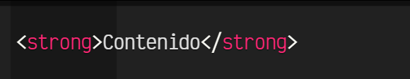

Etiqueta HTML
La parte esencial de una etiqueta HTML es lo que se denomina la etiqueta de apertura.
Se trata de escribir el nombre de la etiqueta en cuestión, colocándola entre los carácteres < y>.
Aunque no es terminantemente obligatorio, se recomienda y considera una buena costumbre escribir las
etiquetas siempre en minúsculas.
En HTML5 no se puede colocar cualquier palabra como etiqueta, sino que existen una serie específica de etiquetas, cada una con una misión y objetivo diferente. Por ejemplo, la etiqueta < strong>:
Como se puede ver, la mayoría de las etiquetas requieren que se especifique un cierre de etiqueta para saber donde termina de actuar. Se caracteriza en que se escribe igual que la etiqueta de apertura, pero con la barra / inmediatamente después del <.